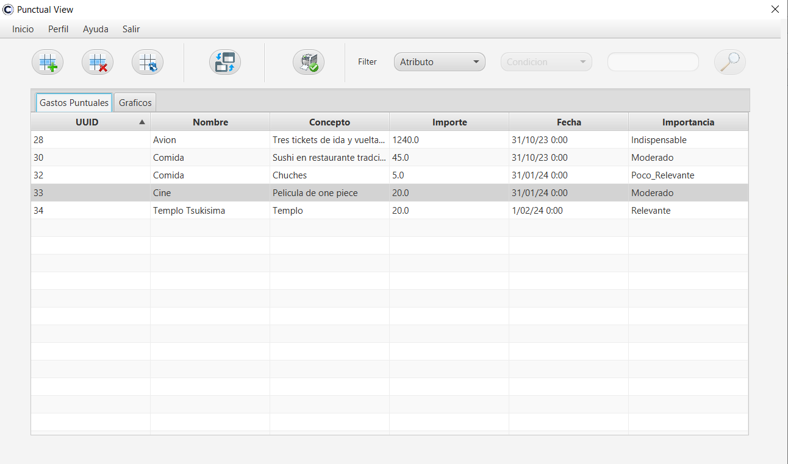

Al igual que en la ventana principal, en la ventana de gastos puntuales hay un apartado superior de botones.
Apartado de Botones (Tabla)
Tendrás los botones para el uso de la tabla, es decir, el primero lo usarás para crear una nueva fila (para crear un nuevo gasto), el segundo para borrar la que previamente habrás seleccionado (que será el gasto que hayas seleccionado) y el tercero es para actualizar los datos de los gastos de la tabla.
Uso de botones
Apartado de Navegación
Tendrás un botón que será para la navegación entre ventanas, sirve para abrir la ventana de gastos puntuales.
Apartado de Informes
En este caso, para sacar el informe de la ventana de puntuales.

Apartado de Filtrado en la Tabla
- El primer Combo es utilizado para elegir por el atributo que queramos filtrar.
- El segundo para la condición que usaremos en caso de seleccionar (Importe, importancia).
- El TextField lo usaremos para escribir el dato cuando la selección del atributo haya sido seleccionado.
- Y por último, tendrás el botón de buscar que es el que dará la acción que previamente hayamos seleccionado.
En la parte inferior hay dos pestañas. En la primera aparece una tabla con los gastos de las cuentas, y en la segunda pestaña, aparecen los gráficos correspondientes.
Para el uso del filtrado:
Para empezar tienes un ComboBox que se llama "atributo". Haz clic y se desplegarán las diferentes opciones. Pulsa en la opción que desees:
- Si seleccionas los atributos de Uuid, Nombre o Concepto:
- Se habilitará el TextField para poder escribir el dato que quieras y el combo de condición quedará inhabilitado.
- En caso de seleccionar importe o importancia:
- Se habilitará el siguiente ComboBox que hemos llamado "condición".
- Se desplegarán las diferentes opciones en base a la selección.
- Una vez seleccionado, se habilita el TextField para escribir.
En ambos casos, para hacer el filtrado, haz clic en el botón de "buscar", y ello hará que se muestren en la tabla los gastos con esas características.
La tabla:
Es una tabla editable con diferentes celdas. El Uuid es auto generado, el nombre y el concepto son TextField. La fecha es un DatePicker, y las celdas de importancia e importe son Combobox con las opciones para seleccionarlas. La celda del id no es editable.
Los gráficos:
Los gráficos se actualizan solos.
MenuBar
En la parte superior de la ventana, tienes un Menubar con diferentes opciones:
- Inicio: Para ir a la ventana principal.
- Perfil: Te redirige a cambiar la contraseña.
- Ayuda: Para obtener el contenido de ayuda de la ventana.
- Salir: Para cerrar sesión o cerrar la aplicación.